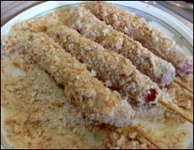
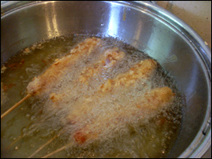

A very quick and easy snack to make at home,take the sausages and insert the chicken skewers at one end. Leave enough of the stick so that you can hold the sausage later. Take all the ingredients for the batter and mix them together well in a bowl so that it makes a paste.

In a saucepan put a reasonable amount of oil so that you can deep fry them. On a plate layout all the breadcrumbs. Once the oil is hot coat each of the sausages in the batter and then the breadcrumbs. Pop them straight in the saucepan to fry.

As I have used cooked sausages once the batter is cooked, you can remove from the pan. I place on some kitchen towel to remove some of the oil and once the sticks are cooled you can eat. If you want a nice dipping sauce, mix together 3 tablespoons of tomato ketchup, 1 tablespoon of gochujang and sugar. If you want to make more of a meal of it you can cook some chicken breast in the same way and serve with some fries.
Enjoy your hotdog
By Juan Hwang